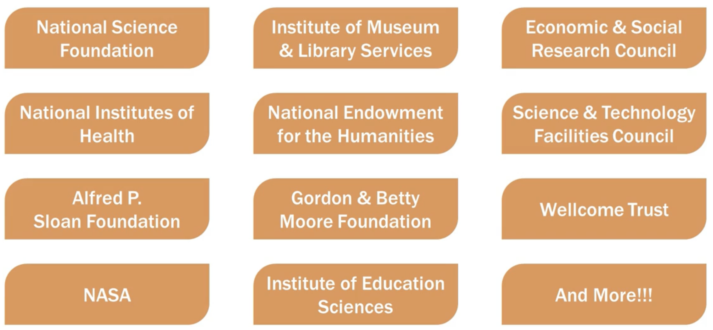
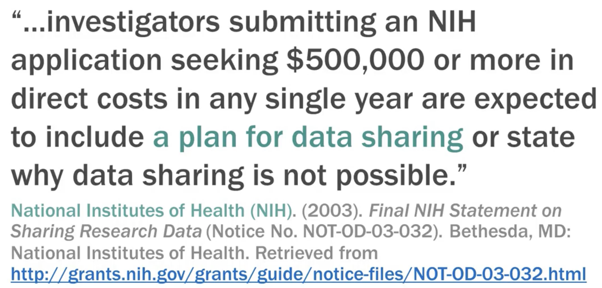

Funders

Why Manage Data?
Allows for verification or refinement of published research results
Reduces the potential for scientific fraud
Promotes new research
Provides resources for training new research
Discourages unintentional redundancy
Funding Agency Requirements
NSF Requirements
- Types of data to be produced for the project
- Data and metadata format and content
- Policies for access and sharing, including security provisions
- Policies and provisions for dissemination and re-use
- Plans for archiving, preserving, and providing access to the data
NIH Requirements
- Final dataset formats
- Documentation
- Analytic tools necessary to use the data
- Data sharing agreements
- How and when the data will be accessible to others

Data Management Plan Content
- Describe the data collection methods
- Discuss the plans for organizing the files
- Discuss quality assurance protocols
DMP Content (Cont.)
- Describe documentation needed for interpretation and use
- Describe provisions for protecting confidentiality
DMP Content (Cont.)
- Identify the owner of the data and conditions for use
- Discuss permissions with the data producer
- Describe provisions for storage
- Describe plans for systematic backups
DMP Content (Cont.)
- Describe security measures
- Describe compliance with standards
- Note the potential value of the data
- Note the effort required to prepare data for preservation and access
DMP Content (Cont.)
- Identify a repository to archive the data
- Identify plans to prepare and document the data
- Identify the mechanism to share the data
- Describe how the data will be found/delivered
- Specify acknowledgment and citation requirements